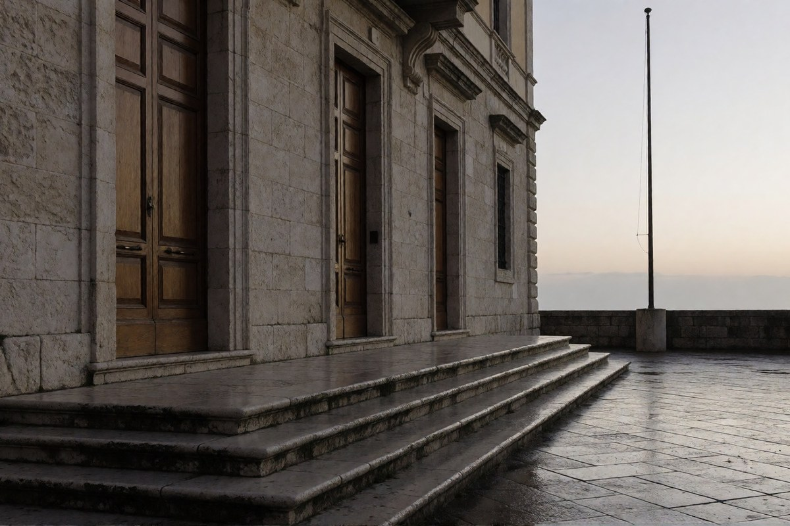

Mafia e antimafia · 25 novembre 2026
«Assaltiamo il tribunale»: trentatré arresti nella Locride

Nel palazzo di giustizia di Locri erano custoditi cocaina e cinque milioni di euro sequestrati. Secondo la Direzione distrettuale antimafia di Reggio Calabria alcune cosche progettavano di andarseli a riprendere con un assalto, mai attuato.
di Franco Zanghì
Dentro il palazzo di giustizia di Locri, sulla costa ionica della provincia di Reggio Calabria, erano custoditi una partita di cocaina e cinque milioni di euro in contanti, sequestrati in passato dalle forze dell'ordine. Secondo gli inquirenti alcune cosche della Locride avevano progettato di andarseli a riprendere assaltando il tribunale. Il piano, sempre secondo l'accusa, non è mai stato messo in atto.
È uno dei filoni dell'operazione di mercoledì 25 novembre 2026. All'alba i carabinieri del Raggruppamento operativo speciale, coordinati dalla Direzione distrettuale antimafia di Reggio Calabria, hanno eseguito un'ordinanza di custodia cautelare del giudice per le indagini preliminari: 33 persone, 32 in carcere e una ai domiciliari.
Hanno lavorato anche i comandi provinciali di Roma, Milano, Torino, Bologna, Arezzo e Viterbo, con lo squadrone eliportato Cacciatori di Calabria.
Le accuse
Le contestazioni, a vario titolo, sono di associazione finalizzata al traffico internazionale di droga, detenzione di armi anche da guerra, riciclaggio e ricettazione, con l'aggravante di aver agito per agevolare e finanziare la 'ndrangheta. Sono ipotesi dell'accusa: per tutti vale la presunzione d'innocenza fino alla sentenza definitiva.
L'inchiesta è partita nel 2022 dalle chat criptate della piattaforma Sky Ecc. Secondo gli inquirenti un cartello che riuniva uomini ritenuti legati a cosche del versante ionico, di quello tirrenico e del centro della regione importava grandi partite di cocaina dal Sudamerica, con una purezza indicata in conferenza stampa fino al 94 per cento.
Nella ricostruzione dell'accusa ci sono contatti in Brasile, in Colombia e a Panama, e uomini nei porti fino a Rotterdam. Il gruppo avrebbe potuto contare su sommozzatori, per recuperare la droga sotto le chiglie delle navi, e su un pilota di linea.
I soldi macchiati e gli uomini dalla Puglia
Il denaro, secondo gli investigatori, seguiva due strade. Una parte passava da intermediari cinesi a Roma, che la trasferivano all'estero. Un'altra parte era fatta di banconote macchiate dall'inchiostro antirapina, ripulite con un procedimento chimico grazie a esperti messi a disposizione da gruppi criminali pugliesi.
Ed è dalla Puglia, sempre secondo l'accusa, che sarebbero dovuti arrivare gli uomini per l'assalto al palazzo di giustizia: persone descritte dalle testate come specializzate negli assalti ai furgoni portavalori.
Il procuratore di Reggio Calabria, Giuseppe Lombardo, e il procuratore nazionale antimafia hanno insistito in conferenza stampa su un punto tecnico: senza strumenti per leggere le chat criptate, inchieste come questa non si fanno.
Che cosa resta
I nomi degli arrestati li hanno pubblicati diverse testate. Qui non vengono riportati: sono persone raggiunte da una misura cautelare, non condannate. Nelle fonti consultate non risultano, per ora, dichiarazioni delle difese.
Il dato che pesa non è il numero degli arresti. È l'idea stessa di andare a riprendersi la refurtiva dentro un tribunale: il luogo dove lo Stato tiene le prove di quello che ha sottratto alla criminalità. Un progetto rimasto sulla carta dice comunque qualcosa su chi lo ha pensato, e su quanto si sentiva al sicuro.
Fonti
- ANSA, «Assaltiamo il Tribunale, il progetto delle cosche della Locride», 25 novembre 2026
- ANSA Calabria, «Cosche volevano assaltare Tribunale Locri per recuperare droga e denaro», 25 novembre 2026
- CalabriaNews24, «'Ndrangheta, le cosche volevano assaltare il Tribunale di Locri», 25 novembre 2026
- Fanpage, «Assaltatori specialisti dalla Puglia, così la 'ndrangheta voleva attaccare il Tribunale», 25 novembre 2026
- Radio Azzurra News, con le dichiarazioni in conferenza stampa sulle chat criptate, 25 novembre 2026
- Lamezia Terme, «Locride, le cosche progettavano l'assalto al Tribunale per 5 milioni», 25 novembre 2026
I fatti descritti sono la ricostruzione dell'accusa, contenuta in un'ordinanza di custodia cautelare: nessuno degli indagati è stato giudicato. Il progetto di assalto al palazzo di giustizia, secondo gli stessi investigatori, non è mai stato attuato. I nomi degli arrestati, pubblicati da alcune testate, non vengono riportati. Il numero esatto dei capi d'imputazione e la purezza della cocaina sono dati riferiti in conferenza stampa e non verificabili in modo indipendente. Nelle fonti consultate non risultano dichiarazioni dei difensori.
Questo articolo nasce dalla pagina Gli Eroi dell'Abisso, dove la stessa storia è raccontata in video.